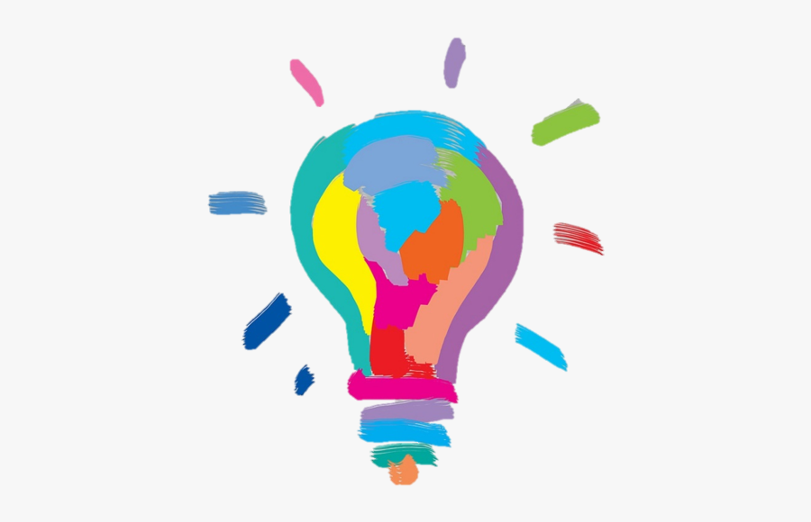

<app-members>
<div class="container">
  <a routerLink="/inovare" id="goback">Go back</a>
  <h1>INOVARE îN ECHIPE - QUIZ</h1>
  <div>
  <div class="info">

    <label id="a1">Ce este inovația în echipă?</label>
    <mat-radio-group
      class="example-radio-group"
      [(ngModel)]="a1"
      >
      <mat-radio-button class="example-radio-button" *ngFor="let answer of q1" [value]="answer" [name]="answer">
        {{answer}}
      </mat-radio-button>
    </mat-radio-group>
    <p *ngIf="showResult"><b>Răspuns corect: În general înțeleasă ca incluzând atât dezvoltarea, cât și implementarea noutăților</b></p>

    <label id="a2"> Inovația se referă la a face lucruri noi, nu doar la a gândi lucruri noi.</label>
    <mat-radio-group
      aria-labelledby="a2"
      class="example-radio-group"
      [(ngModel)]="a2">
      <mat-radio-button class="example-radio-button" *ngFor="let answer of q2" [value]="answer">
        {{answer}}
      </mat-radio-button>
    </mat-radio-group>
    <p *ngIf="showResult"><b>Răspuns corect: Adevărat</b></p>

    <label id="a3"> Echipele sunt mai inovatoare atunci când...</label>
    <mat-radio-group
      aria-labelledby="a3"
      class="example-radio-group"
      [(ngModel)]="a3">
      <mat-radio-button class="example-radio-button" *ngFor="let answer of q3" [value]="answer">
        {{answer}}
      </mat-radio-button>
    </mat-radio-group>
    <p *ngIf="showResult"><b>Răspuns corect: au membri cu medii diverse și se angajează într-un proces de integrare a informațiilor echipei</b></p>

    </div>
    <div class="img">
      
    </div>
    </div>
    <label id="a4">Când inovăm ne adaptăm nevoilor existente și schimbărilor din mediu.</label>
    <mat-radio-group
      aria-labelledby="a4"
      class="example-radio-group"
      [(ngModel)]="a4">
      <mat-radio-button class="example-radio-button" *ngFor="let answer of q4" [value]="answer">
        {{answer}}
      </mat-radio-button>
    </mat-radio-group>
    <p *ngIf="showResult"><b>Răspuns corect: Adevărat</b></p>

    <label id="a5">Inovația și creativitatea sunt concepte interschimbabile.</label>
    <mat-radio-group
      aria-labelledby="a5"
      class="example-radio-group"
      [(ngModel)]="a5">
      <mat-radio-button class="example-radio-button" *ngFor="let answer of q5" [value]="answer">
        {{answer}}
      </mat-radio-button>
    </mat-radio-group>
    <p *ngIf="showResult"><b>Răspuns corect: Fals</b></p>

  <button mat-stroked-button class="submit-button" type="submit" (click)="onSubmit()">SUBMIT</button>
  <p class="points" *ngIf="showResult"><b>Ai obtinut {{score}}/5 raspunsuri corecte.</b></p>
  <div style="color: white;">Sfarsit</div>
  <div style="color: white;">Sfarsit</div>
  <div style="color: white;">Sfarsit</div>
  <div style="color: white;">Sfarsit</div>
  <div style="color: white;">Sfarsit</div>
  <div style="color: white;">Sfarsit</div>
  <div style="color: white;">Sfarsit</div>
  <div style="color: white;">Sfarsit</div>
  <div style="color: white;">Sfarsit</div>
</div>
</app-members>
